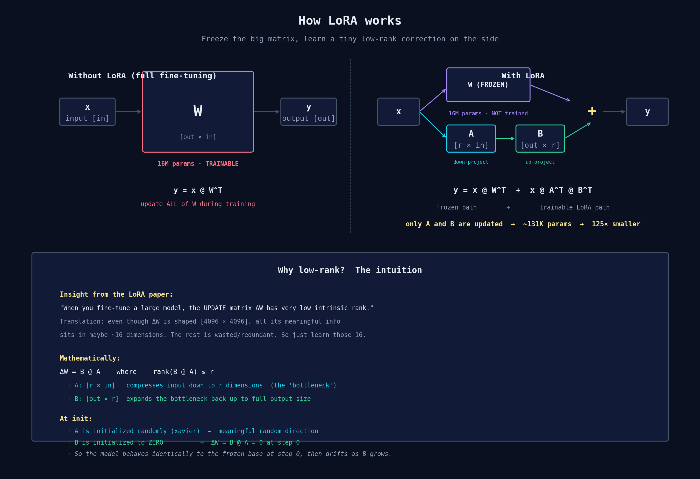
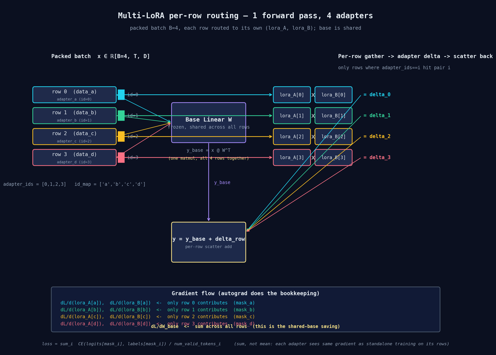
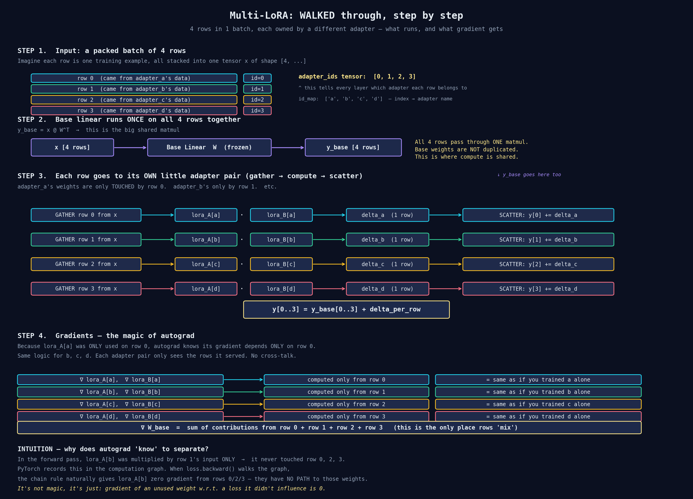

TL;DR
You have N LoRA adapters you want to train at the same time on a single GPU. Naively that would be N forward passes — one per adapter. The trick is to pack them all into one forward pass: route each row of the batch to its own adapter, share the giant base matmul across everyone, and let PyTorch's autograd separate the gradients automatically. Below is the visual story, end-to-end.
1. LoRA basics — what we are starting from
Before talking about multi-LoRA, let's nail down what a single LoRA does. Take any linear layer in a pretrained transformer:
y = x @ W
W might be shape [4096, 4096] — that's 16 million parameters. Full fine-tuning means updating all of them. LoRA freezes W and adds a tiny correction:
y = x @ W + x @ A @ B
where A is shape [r, in] and B is shape [out, r], with r small (we use 16). The product B @ A has the same shape as W but is constrained to rank ≤ r, so the trainable params drop from 16M to about 131K — a ~125× reduction.

The init trick: A is initialized randomly (xavier), B is initialized to zero. So at step 0 the correction B @ A = 0 and the LoRA-augmented model behaves exactly like the frozen base. Then as B learns nonzero values, the model gradually drifts toward your fine-tuning target.
2. Multi-LoRA — N adapters, one forward pass
Now the question we actually care about: I have 4 different adapters (a, b, c, d), each trained on different data. How do I train them all in one step without doing 4 separate forward passes?
The answer: pack one row from each adapter into a single batch, run one forward pass, and route each row to its own LoRA pair.

Here is the layout of each step:
- Packed batch: 4 rows, one per adapter. We tag each row with
adapter_ids = [0, 1, 2, 3]so every layer knows which adapter owns which row. - Base linear runs ONCE on all 4 rows together:
y_base = x @ W. The base weights are shared — there is one copy ofWin GPU memory, used for everyone. - Per-row gather → adapter delta → scatter: for each adapter
i, gather only the rows whereadapter_ids == i, multiply through that adapter's(lora_A[i], lora_B[i])pair, and scatter the delta back into the right row positions. - Final:
y[i] = y_base[i] + delta_for_row_i.
3. Step-by-step walkthrough
The same idea, walked through one step at a time with annotations:

The reason this works without any clever tricks is the structural property: each adapter's small weights are only invoked on its own rows. lora_A[b] is multiplied against row 1's input, never against rows 0/2/3. PyTorch records this in the autograd graph. When loss.backward() runs, the chain rule naturally sends gradient back to lora_A[b] only from row 1's loss — by mathematics, not by tagging.
4. The loss — why we sum, not mean
For each adapter i we compute a token-level cross-entropy averaged over its valid response tokens:
L_i = sum_tokens(CE) / num_valid_tokens_i
Then we sum, not mean, across adapters:
loss = L_a + L_b + L_c + L_d
Why sum? Each adapter's gradient is ∂L/∂(lora_A[i]) = ∂L_i/∂(lora_A[i]) (the others are zero because their weights weren't in L_i's graph). Summing gives each adapter the same gradient magnitude it would get from standalone training on its rows. If we averaged (/N), each adapter's update would be N× smaller — equivalent to lowering its learning rate by N — which is wrong.
5. Why it is mathematically equivalent to N separate runs
Two claims to convince yourself of:
(a) Forward-pass equivalence. The output of row i through the multi-LoRA layer is y[i] = x[i] @ W + x[i] @ A_i @ B_i — identical to what a single-LoRA model with weights (A_i, B_i) would compute on input x[i]. So the logits for row i are identical to what adapter i would produce on its own.
(b) Backward-pass equivalence. Because (A_i, B_i) appears in the computation graph only for row i, ∂L/∂A_i depends only on row i's loss term L_i. By the chain rule:
∂L/∂A_i = ∂L_i/∂A_i
which is exactly the gradient adapter i would compute in a standalone run on the same data. Same for B_i.
The base weight W sees ∂L/∂W = Σ_i ∂L_i/∂W, but W is frozen (requires_grad=False), so this gradient is computed and discarded. Nothing changes.
Conclusion: training N adapters concurrently with this scheme is bit-equivalent to training each adapter alone on its rows — but at ~1/N the compute, because the giant base matmul is shared.
6. What you save
For Qwen2.5-1.5B with rank-16 LoRA on attention's q/k/v/o projections:
- Base weights: ~1.5B params, frozen, 1 copy in memory
- Per adapter: ~7M params (lora_A + lora_B across all attention layers), trainable
- 4 adapters: 1.5B + 4×7M = 1.528B total params in memory — not 4×1.5B
Compute saving per training step:
- Naïve (4 separate forward passes): 4× the base matmul cost
- Multi-LoRA (1 packed forward): 1× base matmul + 4× tiny adapter matmuls (negligible at rank 16)
- Net: roughly 4× faster training for 4 adapters, and the speedup grows linearly with N
7. Implementation notes
A few things that bit us in practice:
- The loss mask must match what stock SFT uses. NeMo-RL's
NLLLossFnmasks loss totoken_mask × sample_mask(response tokens of valid samples only). If your custom loss masks differently — e.g.labels != -100— losses won't match the single-LoRA reference even when the math is technically correct. - Initialization seeding: each adapter draws its own random
Amatrix. Withnum_adapters=1, the only adapter is the baselora_A(because we skip the "extras" path), so init is identical to a stock single-LoRA run. This is the cleanest equivalence test. - Data ordering: stock NeMo-RL calls
set_seed(sft.seed)before building the dataloader. Multi-LoRA's per-adapter dataloaders need the same — set the seed before building loaders, otherwise shuffle order diverges and losses won't match. - One forward, one backward. Don't loop "for adapter in adapters: forward(); backward()" — that defeats the entire point. Pack, route, single backward, sum loss.
8. Takeaway
Multi-LoRA isn't a clever new architecture — it's the same LoRA you already know, with two additions:
- The model holds N
(lora_A, lora_B)pairs instead of one - Each linear layer routes per-row to the right pair via gather/scatter
Everything else — gradient separation, equivalence to standalone runs, the loss reduction — falls out of two simple facts: each adapter's parameters are only invoked on its own rows, and PyTorch's autograd tracks "what touched what" automatically. By math, not by trick.